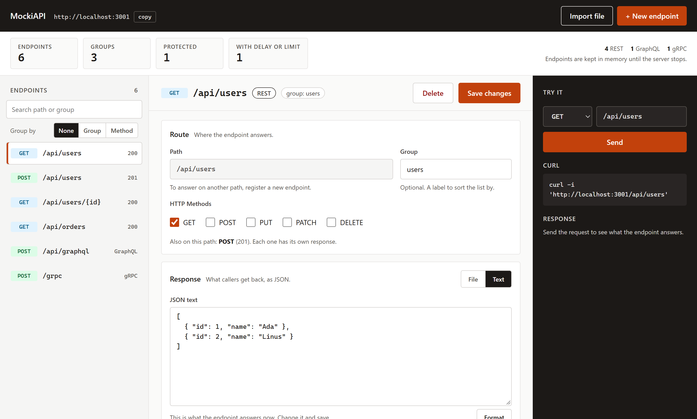

A mock API server you set up while it runs
mockiapi answers HTTP requests with the JSON you give it. Register an endpoint from the web dashboard or with curl, and your frontend, mobile app or integration test can call it right away. No config files, no restart, one binary.
# start it, then open http://localhost:3001
docker run -p 3001:3001 edufsantos/mockiapi

How it works
From nothing to a working endpoint in three commands
-
Write the answer
Any JSON file is a response.
echo '{ "message": "Hello, world!" }' \ > hello.json -
Register the endpoint
A path, the methods and the file.
curl -X POST localhost:3001/register \ -F path=/api/hello \ -F methods=GET \ -F file=@hello.json
-
Call it
It answers at once, until you delete it.
curl localhost:3001/api/hello { "message": "Hello, world!" }
The same three steps can be done in the dashboard, where the response can also be typed or pasted as text instead of uploaded.
Features
What an endpoint can do
Every option below is a field in the dashboard form and a field of POST /register. They can be combined on the same endpoint.
Path parameters and dynamic values
A {name} segment in the path matches any value. With dynamic variables on, {{name}} placeholders in the response are filled from the request.
- segments of the path
- query parameters
- top-level fields of a JSON request body
{{timestamp}}, the current UTC time
A fixed query value in the registered path, such as /search?kind=book, has to be present for the endpoint to match.
# user.json
{
"message": "Hello, {{name}}!",
"user_id": "{{id}}",
"timestamp": "{{timestamp}}"
}
curl -X POST localhost:3001/register \
-F 'path=/api/user/{id}?name={name}' \
-F methods=GET \
-F with_dynamic_vars=true \
-F file=@user.json
curl "localhost:3001/api/user/123?name=John"
{
"message": "Hello, John!",
"user_id": "123",
"timestamp": "2026-11-18T22:34:07.857749903+00:00"
}
Errors, slow answers and rate limits
Test what your client does when the API misbehaves.
- Status code: any status, for example
503. - Delay: the server waits that many milliseconds before answering.
- Rate limit: written as requests per window,
2/10000. Requests over the budget get429. It is counted per endpoint and per HTTP method.
curl -X POST localhost:3001/register \ -F path=/api/slow \ -F methods=GET \ -F status_code=503 \ -F delay=500 \ -F rate_limit=2/10000 \ -F file=@hello.json # three calls in a row: status and time 503 0.501404s 503 0.502501s 429 0.000696s
Authentication
An endpoint can require Basic auth or a bearer token. A request without the right Authorization header gets 401 Unauthorized.
The credentials are test data. The server keeps them as plain text and shows them in /list, so don't use real ones.
# Basic auth -F 'authentication={"username":"admin","password":"secret"}' curl -u admin:secret localhost:3001/api/private # Bearer token -F 'authentication={"tokenData":"my-secret-token"}' curl -H "Authorization: Bearer my-secret-token" \ localhost:3001/api/token
HTTP methods
Choose which methods an endpoint accepts. A path can hold one endpoint per method, so GET /users and POST /users each get their own response and status. A method nobody registered gets 405 Method not allowed.
Edit in place
Change the response or the settings of a registered endpoint and the next call gets the new answer. No need to send the file again.
Mocks in a file
Start with --mocks mocks.yaml and the endpoints are there before the first request. Write the file in YAML or JSON, or hand over a Postman collection: every request with a saved example becomes an endpoint. Good for CI and for docker compose.
Request logs
With RUST_LOG=info the server writes one line per request: client address, method, path, status, time taken and headers.
Beyond REST
GraphQL and gRPC mocks
GraphQL queries and mutations
One file describes every operation the endpoint answers, in a query and a mutation section. The operation name picks the mock, and the answer carries only the fields the request selected, nested ones included.
The endpoint is always POST /api/graphql. Operations must be named. Arguments and variables are accepted and ignored.
# graphql.json
{
"query": {
"getUser": {
"data": { "id": "123", "name": "John Doe",
"email": "john@example.com", "age": 30 }
}
},
"mutation": {
"createUser": {
"data": { "success": true,
"user": { "id": "789", "name": "New User" } }
}
}
}
curl -X POST localhost:3001/api/graphql \
-d '{ "query": "query getUser { id name email }" }'
{"data":{"email":"john@example.com","id":"123","name":"John Doe"}}
Simulated gRPC calls
mockiapi does not speak the gRPC wire protocol. It simulates a call as plain HTTP: the client posts JSON naming the service and the method to POST /grpc, and gets back the JSON registered for that pair.
Register as many service and method pairs as you need. The status code and the delay apply here too.
curl -X POST localhost:3001/register \
-F path=/grpc \
-F methods=POST \
-F grpcService=com.example.BookService \
-F grpcRPC=GetBook \
-F file=@book.json
curl -X POST localhost:3001/grpc \
-d '{ "service": "com.example.BookService",
"rpc": "GetBook", "request": { "id": "b123" } }'
{"author":"Steve Klabnik","id":"b123","title":"The Rust Programming Language"}
Dashboard
A workbench in the browser, inside the binary
The dashboard is served by the same process on the same port. It is compiled into the executable, so there is nothing else to install or host.
Endpoint list
Every registered endpoint with its methods, its path and the status it answers with. Search it, or split it by the group you gave each endpoint or by HTTP method. Counters above it show how many endpoints are protected or slowed down.
Editor
Tabs for REST, GraphQL and gRPC. Give the response as a file or as text, and use Format to indent the JSON. Save changes applies a change, Delete removes the endpoint.
Try it
Sends a real request to the endpoint and shows the status, the time and the body. The path and the body are editable, and the same request is shown as a curl command.
Admin API
Everything the dashboard does, over HTTP
The dashboard is a client of four routes. Scripts and test suites can call them directly to set up the mocks they need and remove them afterwards.
| Route | What it does |
|---|---|
POST /register |
Registers an endpoint from a multipart form. Sent again for a path and a method that exist, it replaces that endpoint. Without a file, the response is kept and only the settings change. |
POST /import |
Registers every endpoint of an uploaded mocks file (YAML or JSON) or Postman collection. The dashboard's Import file button uses it. |
GET /list |
Every registered endpoint with its id and its settings, as a JSON list. |
GET /content/<id> |
The response an endpoint holds. The URL-encoded path works in place of the id, so /api/hello is %2Fapi%2Fhello. |
DELETE /delete/<id> |
Removes an endpoint. With a URL-encoded path in place of the id, it removes every endpoint of that path. |
The fields of /register and the answers the server gives on its own are listed in the reference.
Install
Four ways to run it
All of them listen on port 3001. Pass --port 8080 or set PORT=8080 to use another one.
Release binary
A single executable for Linux, macOS or Windows (amd64), with the dashboard inside. It can be started from any directory.
chmod +x mockiapi-linux-amd64 ./mockiapi-linux-amd64
On Windows, add the .exe extension after downloading.
Docker
The image is edufsantos/mockiapi on Docker Hub.
docker run -p 3001:3001 edufsantos/mockiapi
# on another port
docker run -e PORT=8080 -p 8080:8080 \
edufsantos/mockiapi
Cargo
The crate is published on crates.io and builds with the dashboard already in it.
cargo install mockiapi mockiapi --port 3001
From source
Needs Rust and Node.js. The script builds the dashboard, builds the server and starts it with request logging on.
git clone https://github.com/sfeSantos/mockiapi
cd mockiapi
./init.sh # init.bat on Windows
Good to know
What it does not do
mockiapi is a mock, and a small one on purpose. These are its limits today.
- Endpoints live in memory. When the server stops they are gone, unless they come from a mocks file that is loaded again at the next start. Changes made in the dashboard are not written back to that file.
- Responses are JSON. The server always answers with
Content-Type: application/json, and a response file can be 5 MB at most. - No state between calls. A
POSTdoes not change what a laterGETanswers. - gRPC is simulated. Calls are JSON over HTTP, not the gRPC wire protocol.
- GraphQL is matched by operation name. Arguments, variables and fragments do not change the answer, and subscriptions are refused.
Several of these are tracked in the issue list.
The name
Why a mockingbird
A mockingbird copies the songs of other birds well enough to pass for them. mockiapi does the same for an API: it answers the way the real one would, so the code calling it cannot tell the difference.
It is written in Rust, with a Svelte dashboard.